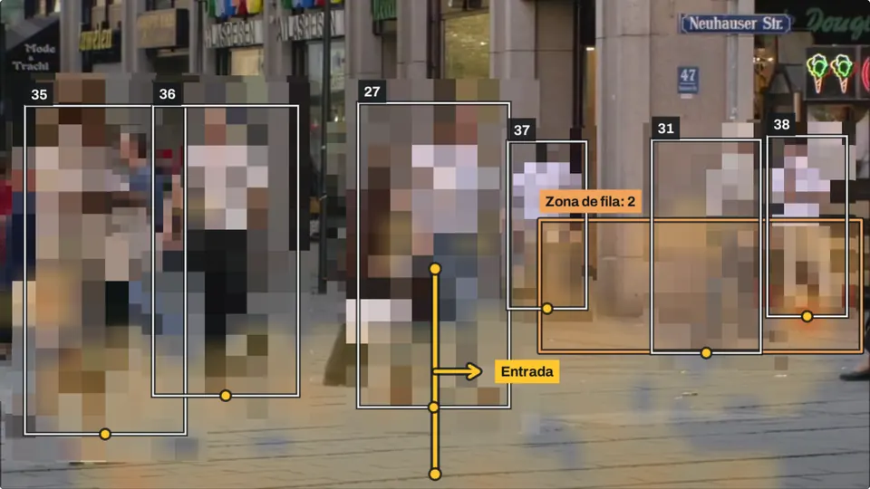

Contador de personas con cámara
Cuenta a quien entra y a quien sale por una puerta, lleva el aforo, avisa cuando se forma fila en caja y marca por dónde camina la gente. Esta demo lo hace en tu navegador: el video no sale de tu teléfono o computadora.
La demo

Captura de la demo encendida
Encendiendo la demo
- Video de muestra en espera
- Modelo de detección (EfficientDet-Lite0) 7.3 MB
- Biblioteca MediaPipe en espera
- Elegir con qué analiza tu teléfono o computadora: tarjeta gráfica o procesador en espera
Mapa de calor: menos tiempo más tiempo
Conteo de hoy con el video de muestra
- Entradas
- 0
- Salidas
- 0
- Dentro ahora
- 0 de 4
- Entradas menos salidas; no baja de 0.
- Máximo dentro hoy
- 0
- En la fila
- 0
Al elegir «Mover la línea» o «Dibujar la zona de fila», la ayuda y los botones aparecen justo debajo del video.
Entradas por minuto, últimos 15 minutos
Ver como tabla
Avisos de hoy
Todavía no hubo avisos. En el servicio instalado le llegan al encargado por WhatsApp o a una pantalla del local.
Demo. Corre en tu navegador con un video de muestra, tu cámara o un video tuyo. El modelo y la biblioteca se descargan de storage.googleapis.com y cdn.jsdelivr.net; el video y las cifras no salen de tu teléfono o computadora. La configuración y el conteo del día se guardan en este navegador.
Créditos
- Video de muestra: «Pedestrian Area», grabado en 2001 por Taurus Media Technik, publicado entre las secuencias de prueba de la Universidad Técnica de Múnich y distribuido por Xiph.org. Su ficha dice «Restrictions of use: No restrictions. Copyright: No Copyright». Lo reducimos a 960 × 540 y lo recomprimimos.
- Detección: MediaPipe Tasks Vision 1.0.1 de Google, licencia Apache 2.0, con el modelo EfficientDet-Lite0 (float16) que Google publica para MediaPipe, entrenado con el conjunto COCO.